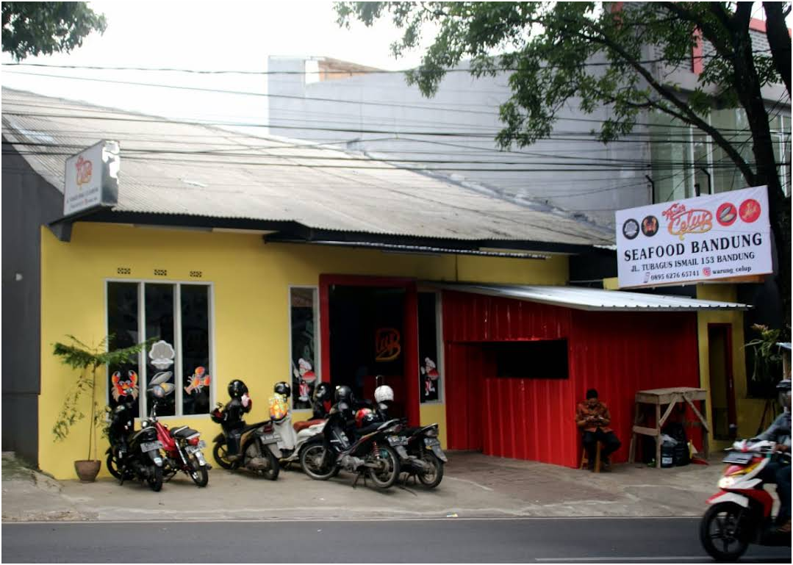
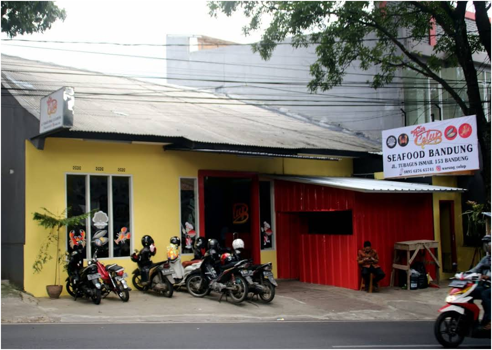

📅 Sabtu, 6 Desember: Hutan Kota & Seafood
08:00 - 08:10
Penjemputan Pagi
Lokasi: Kosan Lintar
Catatan: Outfit santai & nyaman untuk jalan kaki, klo Rara mau pake kaos item (mau samaan juga boleh!)
08:00 - 08:05
Perjalanan ke Hutan Kota
Aktivitas: Perjalanan ke Hutan Kota Babakan Siliwangi.
Catatan: Perjalanan sekitar 5 menit dari unikom
08:05 - 12:00 (4 Jam)
Jalan Santai + Ngobrol di Alam Terbuka
Lokasi: Hutan Kota Babakan Siliwangi
Aktivitas Utama: Nikmati Forest Walk! Tiket masuk GRATIS. Bawa botol minum/kopi. Momen yang pas untuk foto-foto!
12:00 - 13:00
Istirahat & Sholat Dzuhur
Lokasi: Area Terdekat/Musholla
Waktu istirahat sebelum mam yeyyy.
13:07 - 15:00 (2 Jam)
Seafood Date! 🦞
Lokasi: Jl. Terusan Cigadung No.12, Sekeloa (Warung Celup)
Aktivitas Utama: Makan Siang Seafood! Mulai memesan pukul 13:00.
 

Lihat detail lengkapnya di TikTok: Warung Celup
15:00 - Selesai
Antar Rara Pulang
need more huggg :(
🎬 Jumat, 12 Desember: Movie Night
18:00 - 18:30
Perjalanan ke Mall
Lokasi: The Matic Mall
Catatan: siapkan rencana makan setelah bioskop.
Detail Film & Jam Tayang
Jam tayang kita yang diambil adalah 18:40.
20:40 - 21:40
Ngobrol Santai
Lokasi: Mall
Waktu buat makan malam.
20:40 - 22:00
Ngobrol Santai
Lokasi: Mall
Waktu buat makan malam.
22:00 - Selesai
Anterin Rara Pulang & Istirahat
harus peluk lamaaa!!. Semoga dipermudah UAS nya sayangku,! ️🤍🤍